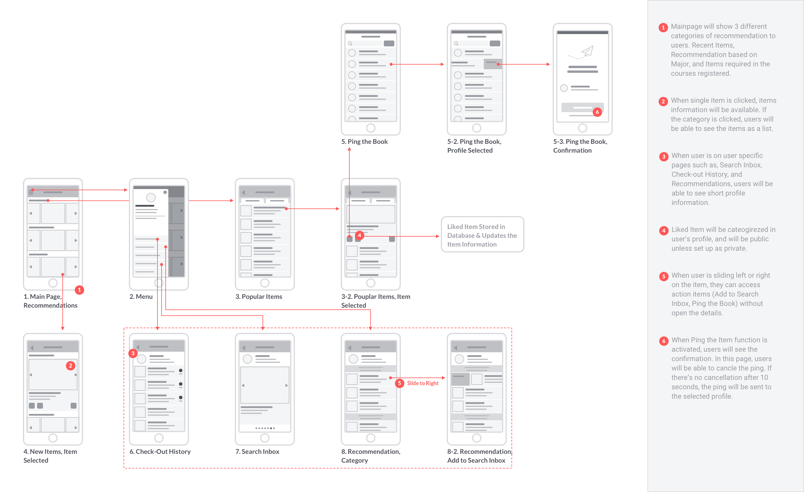
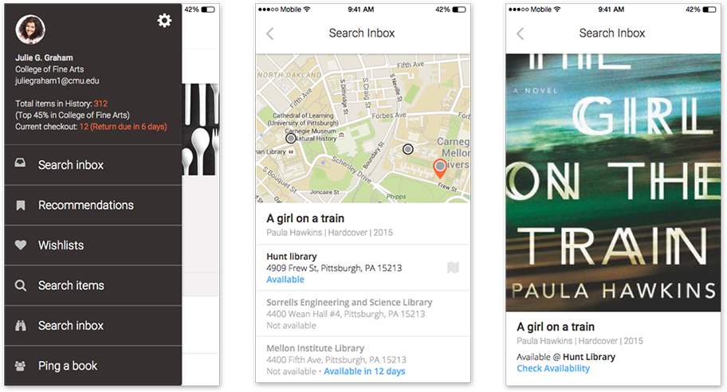

/ Jan 2015 - Feb 2015
Bookclip is an application that helps students to actively utilize the school library by tracking their school portal.
Deliverable
UI Design
Interactive prototype
High fidelity mockup
My Contribution
User Research
High Fidelity Mockup
Wireframe
Prototyping (Framer.js)
Usability testing
In contrast to an increasing number of library resources, most of the students were not aware of this availabilities. To reduce the students’ search for their required materials from the classes and to increase the library usage, I designed a system that utilizes the school online portal and the library management system.
For students to get access to items that is related to their majors and their course registrations, I came up with three key features below.
Users can see the list of items that they checked out with the returning date. Also they can see the details of the book with the time and the library that they visited.
Users will receive recommendations of items based on their search keywords, course registration and their major.
Search Inbox helps users to find the book by providing maps and decimal codes.
To help students to find items that they can relate to, I separated two different ways of getting recommendation. First, based on the static data like majors, and based on the dynamic data like check out history and course registrations.
Since on the mobile, various lists categorized with different dataset, it was important for the lists to be easily differentiated from each other, as well as shares the same functionality.
Most of the students knew where the libraries were located at and they’ve been in the libraries a few times, but not many of them rented materials. They usually went to library for studying and group meet- ups. Their reactions on searching and renting out resources were mostly negative and associated with the words like ‘lost’, ‘confused’, and ‘time-consuming’. Interestingly, they were all positive about having the access to those materials and responded that they would use the libraries more often.
There were several library management systems available online. However, they were useful for searching item locations and checking availability. These systems were not for exploring possible materials.
Resources found in: http://www.lex.sk.ca/downloads.html, http://www.koha.org, https://www.librarything.com, http://www.libraryworld.com, http://www.iii.com/products/polaris
Library World
Integrated Library System. Allow patrons with book search function on mobile phones. Creates patron profile with images. Provide patrons to access the catalogue.
Library management system with mobile features more focused on providing search features and catalogues for patrons.
Polaris
Integrated Library System. Giving access to users, integrating a catalogue to their own social accounts. Allow users to create profiles and connect each other. "Digital Bookshelf for library visitors."
Features made for connections between library visitors. Focused more on features to share library visitors’ book catalogue through Social Networking Services.
Koha
Open source free library management system. Koha allows library staffs to manage book clubs and groups, update library codes as well as remote database access.
More of library management system rather than an application that keeps on track of user interests and needs.
Lexwin
Online Public Access Cataloging System. Allow the library to access the world wide library catalogues.
Patron and membership management is mainly checking the libraries’ circulation details.
Librarything.com
One of the biggest Online book club community. Allow users to catalogue books from Amazon, and 700 worldwide libraries. Allow people to find other users with similar interests and tastes.
Users need to add their own book reading histories. Focuses on book reviewing and exploring new books from other users’ lists.
Many of successful library management systems are mainly focusing on checking in and out with universal management implementation. Several online book clubs have been run based on manual inputs from the users end.
While creating a prototype, it was important to provide value proposition of recommended items to the students. By simply tapping the title of the item, students can read the brief and can decide whether to rent it out. Also, students can see where to find the item and when it is available by tapping the search tool icon on the bottom of each item listed.
After going through 3 iterations, I landed on this final high fidelity mockup. In each session, I removed unnecessary icons and made variations with different font colors and sizes to increase attention on important information such as, titles, availability, and related categories. In addition, I provided 1/3 of space for the book cover image, after discovering that students were highly dependent on the book cover when choosing items.
Students can add items to the Search Inbox. By sliding through the image and map area, students can see the library map, the indoor blueprint and Dewey Decimal Code. After they check out the item from the library, the item will be removed from the list automatically.
For the search inbox, I increased the size of the image to 80% so that the students can easily locate the items by looking for the matching images. In addition, I differentiated the colors between available and unavailable items so that the students can see the difference at a glance.
